From Frankfurt to Paris to Portland — we bring Vistasilica solutions to the world's most important industry trade shows. Meet the team, see the products, and explore real application demos.
Our debut at CPHI Worldwide marked Vistasilica's entrance into the pharmaceutical excipients and edible-oil purification markets. The team showcased VS-PH350 high-purity silica for oral solid dosage and VS-OE550 for edible oil refining — connecting with formulators, distributors, and refineries from Europe, the Middle East, and South America.
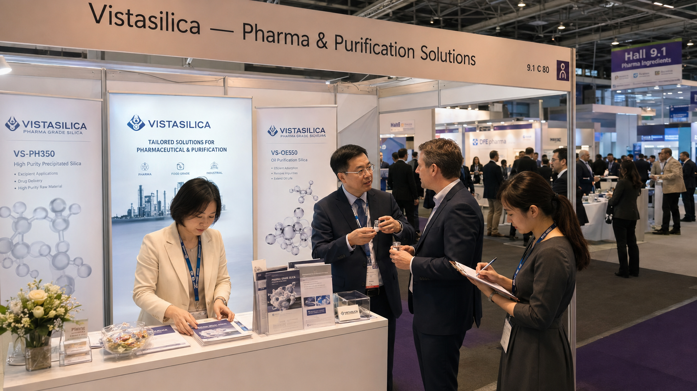
Booth overview — Messe Frankfurt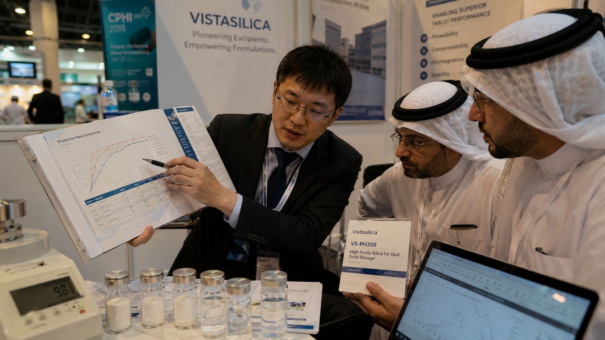
Technical deep-dive with pharma buyers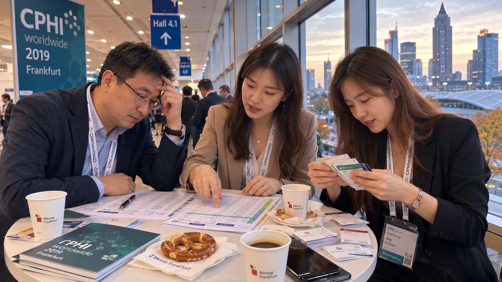
VS-OE550 oil purification demo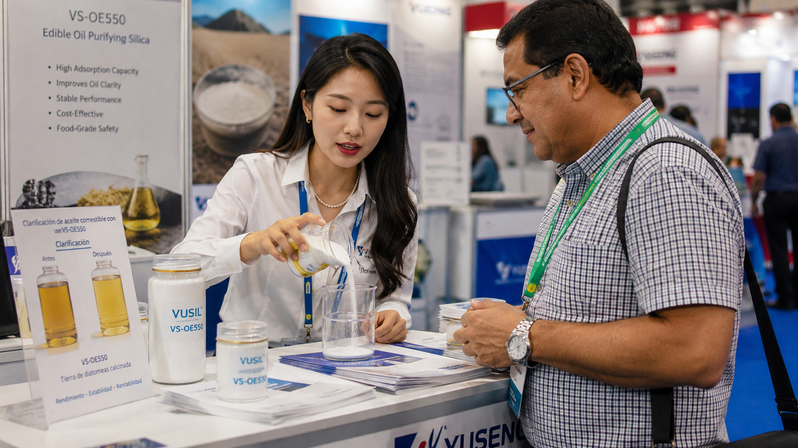
End-of-day team debriefReturning to Frankfurt for Fi Europe, we brought our food-grade and feed-grade anti-caking solutions front and center. Live flowability demos with VS-FC200 (food) and VS-FD150 (feed) drew strong interest from seasoning blenders, powdered-beverage manufacturers, and premix producers across Europe and Southeast Asia.
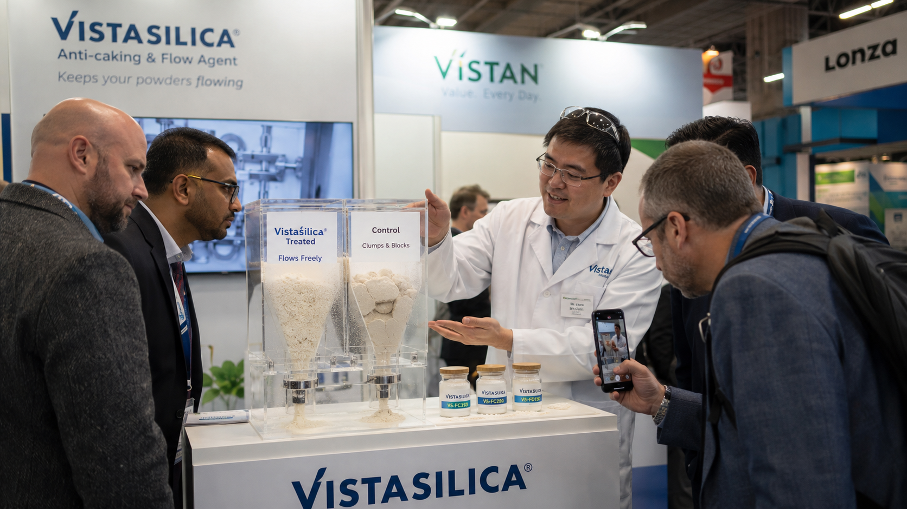
Island booth — Messe Frankfurt Hall 4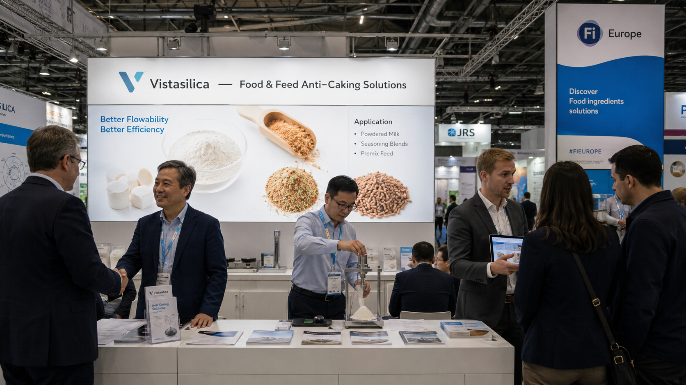
Live anti-caking flowability demo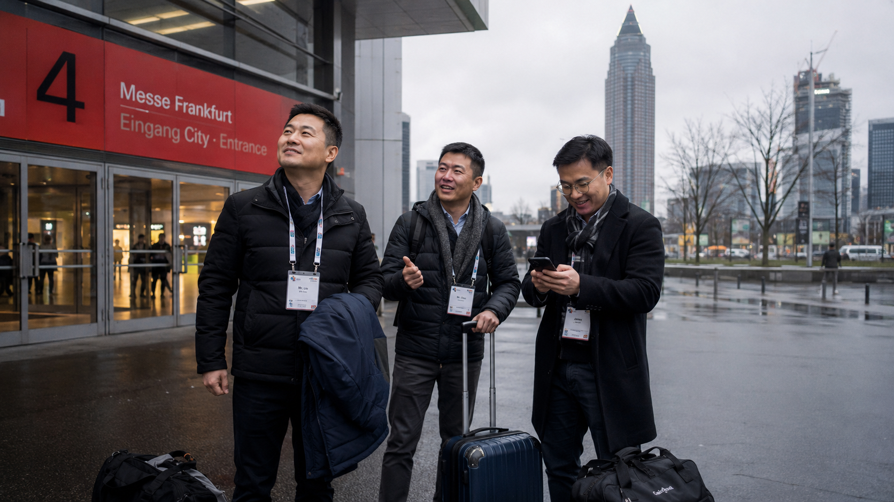
Business negotiation with pet-food manufacturer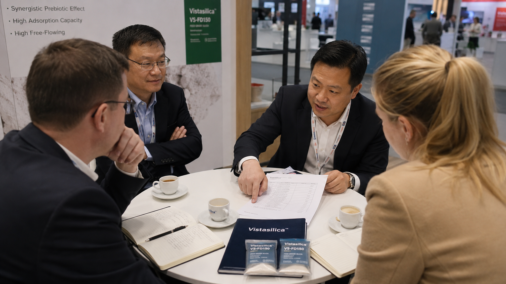
Post-show wrap — Frankfurt skylineAt in-cosmetics Global in Paris, we introduced Vistasilica's personal-care and oral-care silica portfolio to the beauty and cosmetics formulating community. The blind sensory panel — comparing Vistasilica matte-finish silica against competitors — became a booth highlight, attracting indie brands, contract manufacturers, and major skincare R&D teams.
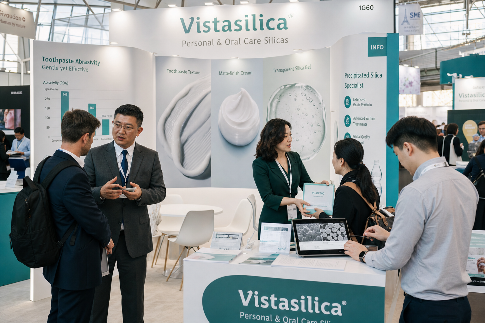
Blind sensory panel — matte finish comparison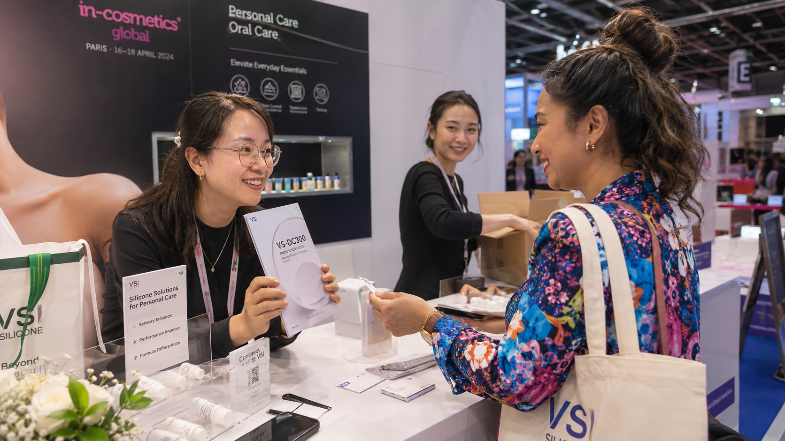
New client connection — indie beauty brand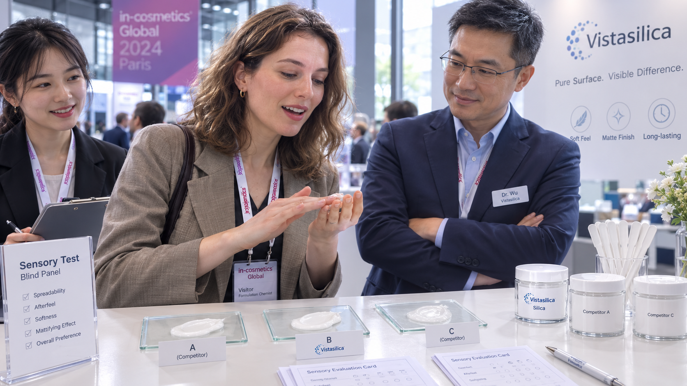
Paris evening wrap-upOur first appearance at the AOCS Annual Meeting in Portland marked a strategic push into the North American edible-oil refining market. Dr. Zhao presented a co-authored research poster on novel silica adsorbents for phospholipid removal, while the team connected with major refiners including Cargill engineers and Brazilian soybean-oil processors — all centered on VS-OE550's cost-per-ton-treated advantage.
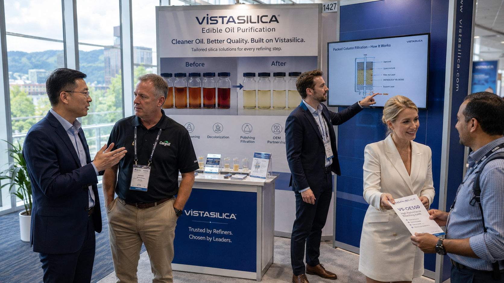
Booth at Oregon Convention Center, Portland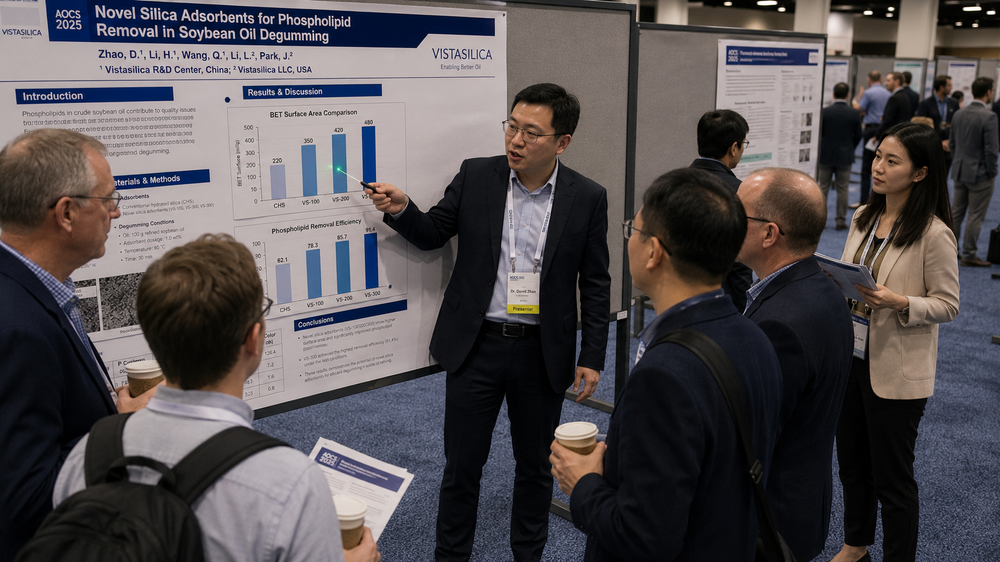
ROI discussion with US frying-oil supplier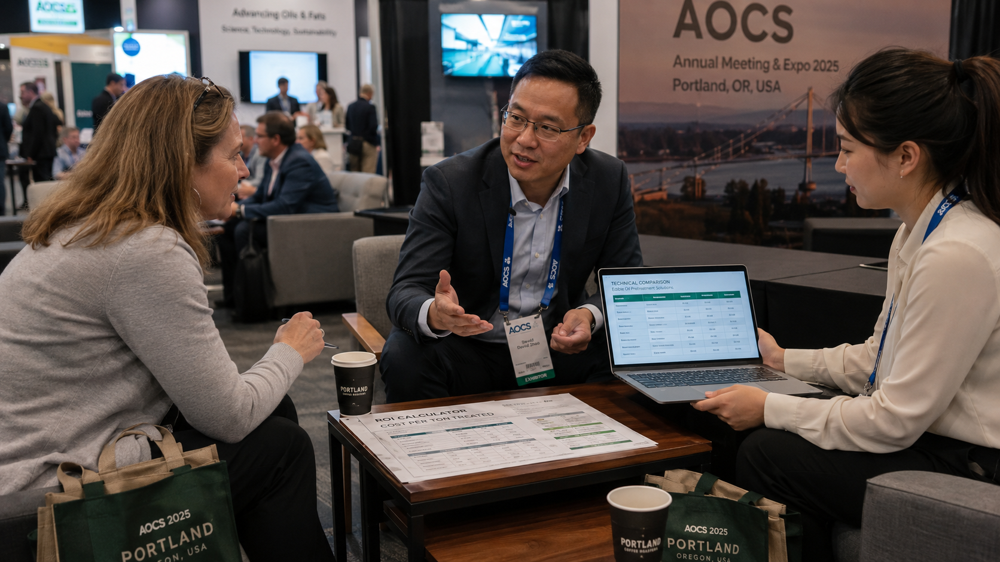
Portland craft brewery — team wind-downDebut on the global stage. Introduced pharma-grade VS-PH350 and oil-purification VS-OE550. First connections with European and Middle Eastern pharma distributors.
Returned to Frankfurt with food and feed anti-caking solutions. Live demos, business negotiations, and a growing reputation in the food-ingredient space.
Entered the personal-care and oral-care market. Sensory panels, indie-brand connections, and VS-DC300 positioned for the cosmetics supply chain.
North American debut. Research poster, Cargill conversations, and VS-OE550 cost-model discussions with major US and Brazilian refiners.
We exhibit at major industry events worldwide. Want to schedule a meeting at an upcoming show, or just stay informed about where we'll be next?